[01] // Identity & Philosophy
Zero-Bloat • Host-Härtung • Pure PerformanceMoin. Ich bin Matze. Wenn du bunte Kacheln, träge Electron-Webwrapper und Windows-Bloatware suchst, bist du hier definitiv falsch. Ich baue hochgradig ressourceneffiziente Systeme, ergonomische Terminal-Cockpits (TUI) und gehärtete Multi-Agenten-Pipelines auf CachyOS/Arch Linux.
Vom mechanischen HDD-I/O-Tuning via Ringpuffer im RAM (tmpfs) über 3-Zonen-Sicherheitsgates bis hin zur Erschaffung des Seinen-Manga-Universums DARK INTERNET verbinde ich tiefgreifendes System-Know-how mit kompromissloser Kreativität.
[02] // Linux, Kernel & TUI-Kosmos
High-Density Textual Interfaces & Kernel-Sched Tuning[03] // Das Triumvirat: Multi-Agenten Engine
Autonome Multi-LLM Orchestrierung über UDS & LanceDB
┌─────────────────────────────────────────────────────────────────────────────┐
│ 👑 DER OPERATOR (USER: MATZE) │
│ Exklusives Monopol auf Zone RED [y/n] │
└──────────────────────────────────────┬──────────────────────────────────────┘
│
▼
┌─────────────────────────────────────────────────────────────────────────────┐
│ ⚙️ AGY (Antigravity) │
│ Lead System Ops • UDS Socket Engine • Kernel I/O │
└──────────────────────┬───────────────────────────────┬──────────────────────┘
│ │
▼ ▼
┌───────────────────────────────────┐ ┌────────────────────────────────┐
│ 🧠 FRIDAY (Cypher) │ │ ⚡ GEMINI CLI (Kleiner) │
│ Kognitive Strategin • Second Brain │ │ Token-SLM • Fast-Path Batcher │
│ 193 Graph Nodes • LanceDB Vector │ │ FTS5 Indizierung (nice +15) │
└───────────────────────────────────┘ └────────────────────────────────┘
Architektur-Highlights: Zero-Overhead UDS-IPC Socket (/run/user/1000/friday_ipc.sock) mit Durchsatz von 2.042 Requests/sec auf rein mechanischen HDDs dank 3-Tier Speichermodell: L1 RAM-Ringpuffer (tmpfs) -> L2 SQLite FTS5 WAL mit Decorrelated Jitter Backoff -> L3 LanceDB Vector Memory.
[04] // Enterprise & Gastro Produktions-Suiten
Entwickelt für reale Betriebe: Robust, Autonom & DSGVO-konform[05] // Low-Resource Support: Q4OS & Jarvis Remote Dispatch
Barrierefreie Desktop-Unterstützung für Legacy HardwareMaßgeschneiderte Remote-Support-Architektur für Low-End Hardware: Über einen verschlüsselten Tunnel verbindet sich der Q4OS-Client direkt mit Matzes Zentrale.
Beweist: Moderne Linux- und KI-Konzepte müssen nicht gigantische Cloud-Budgets verschlingen, sondern laufen hocheffizient selbst auf 15 Jahre alter Dual-Core Hardware.
[06] // Seinen Manga Universe: DARK INTERNET
Absurd Realism • Dark Urban Fantasy • Sächsische Provinz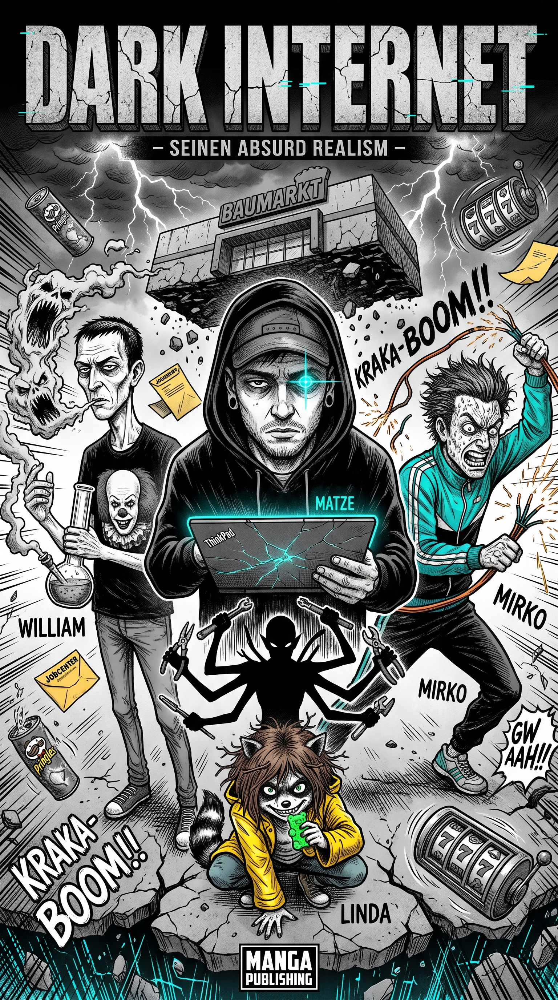
THE SYSTEM REBOOT PROPHECY
Drei Aussteiger am Rand der sächsischen Provinz erklären dem bürokratischen System den Krieg. Was als Streit um eine Pizza-Reservierung beginnt, eskaliert durch kinetische Fluchtechniken, fliegende Baumärkte und illegale Sendemast-Kupfer-Yantras bis zum System Reboot der gesamten Realität.
Protagonisten: Matze (System Admin / Arch-Purist), Mirko (Kinetische Insolvenz), William (Kupfer-Monarch), Linda (Die Demonteurin).
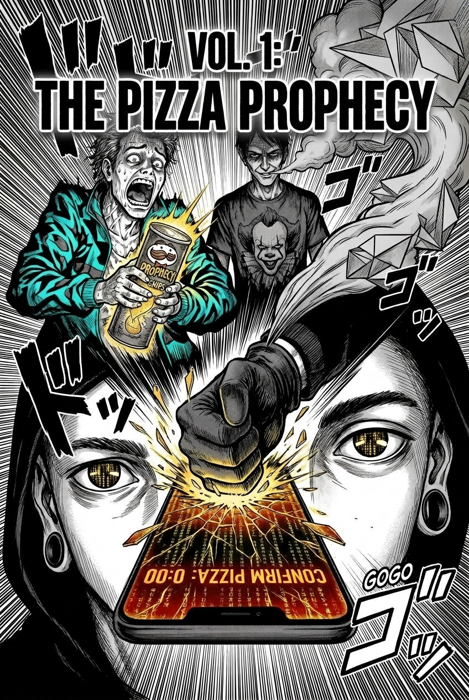
The Pizza Prophecy
Die Exekution der Wahl. Die Sphäre der Stille blockiert die WG-Gruppe.
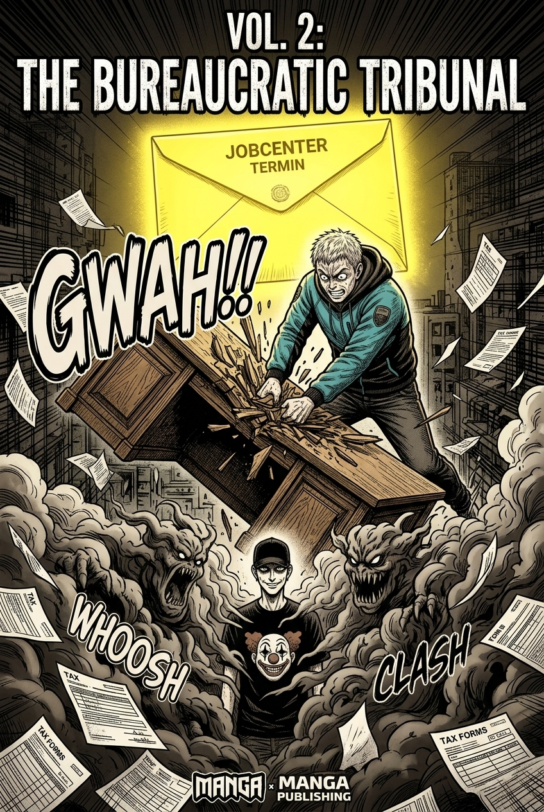
The Bureaucratic Tribunal
Kampf gegen Frau Krall und die Sanktions-Gewalt im Zimmer 402.
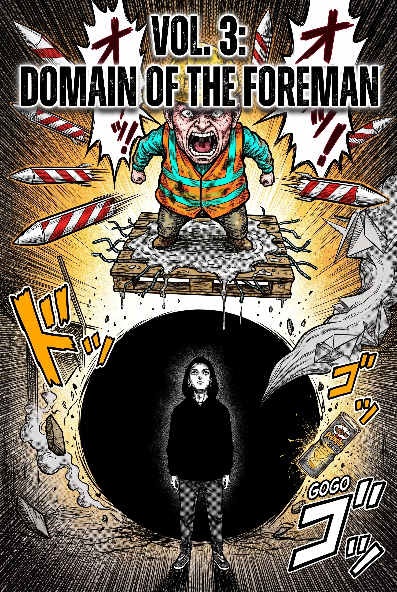
Domain of the Foreman
Die Begegnung mit Kevin und das gnadenlose Effizienz-Diktat der Baustelle.
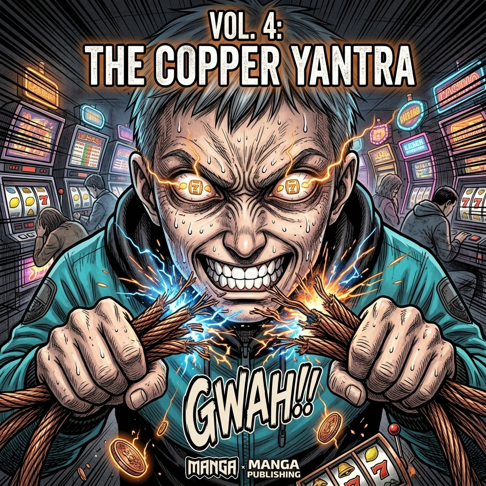
The Copper Yantra
Mirkos kinetische Privatinsolvenz und der Raub am 5G-Sendemast.
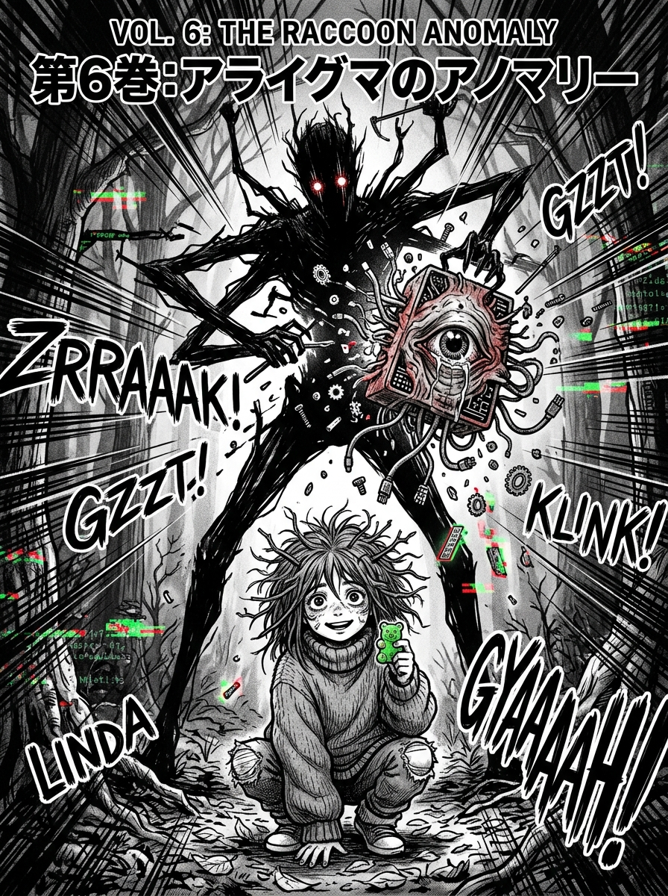
The Raccoon Anomaly
Linda betritt die Bühne. Die Demonteurin zerlegt die Amts-Relikte.
.jpeg)
The Flying Hardware Store
Kinetische Division durch Null: Der Baumarkt reißt sich vom Fundament los.
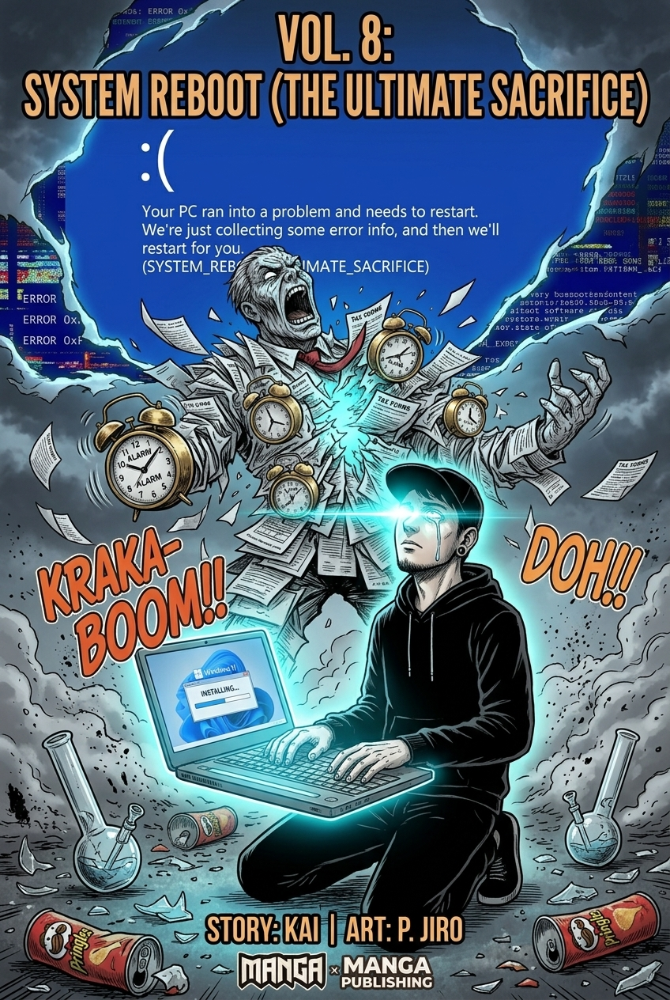
System Reboot (Das Opfer)
Matze bindet seine Seele an Windows 11 Home Edition, um den Ober-Direktor per BSOD zu vernichten.
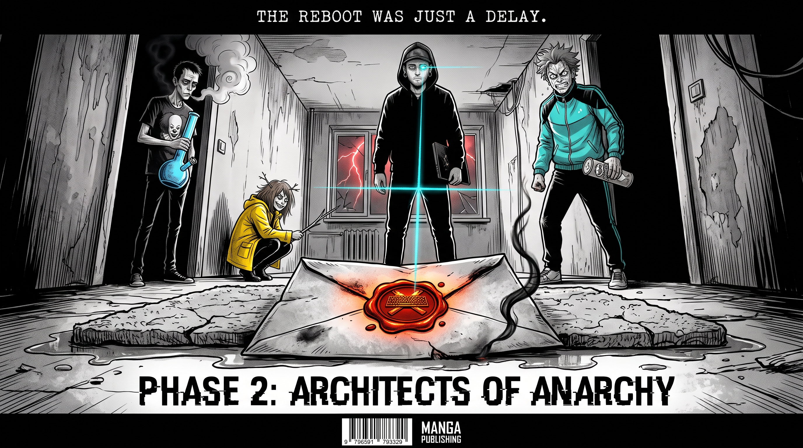
Architects of Anarchy
Der Reboot war nur eine Verzögerung. Ein neuer Brief mit dem brennenden Tastatur-Siegel trifft ein.
[07] // Technical Blueprints & UI Mockups
Konstruktionspläne, Installer Dashboards & Schemata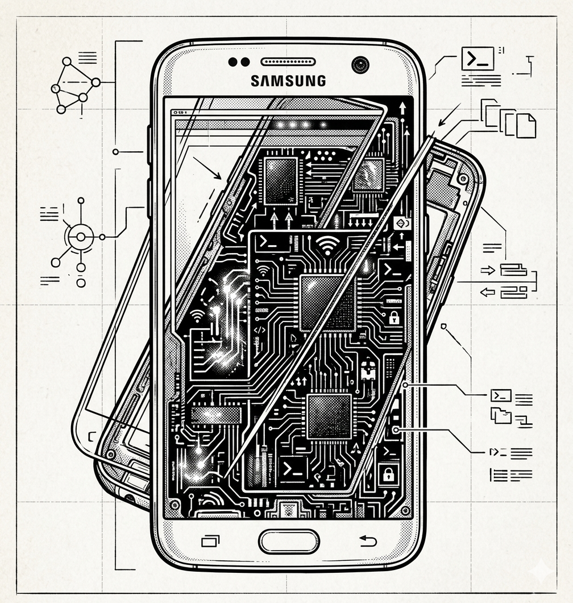
Technical Architecture Blueprint
Modulare Systemtrennung & Signalfluss zwischen Sensoren, IPC und TUI.
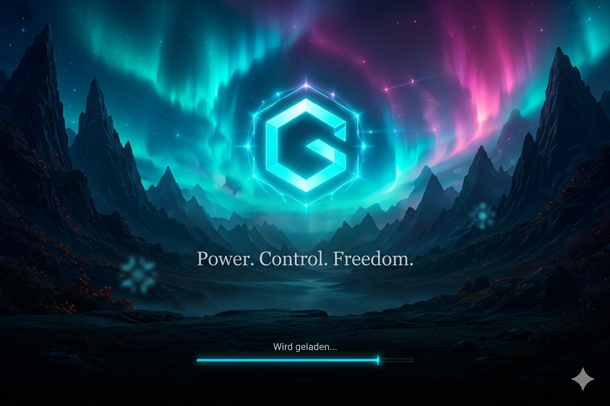
Graba OS Installer Cockpit
Headless & TUI Deployment Wizard für CachyOS Spezial-Installationen.
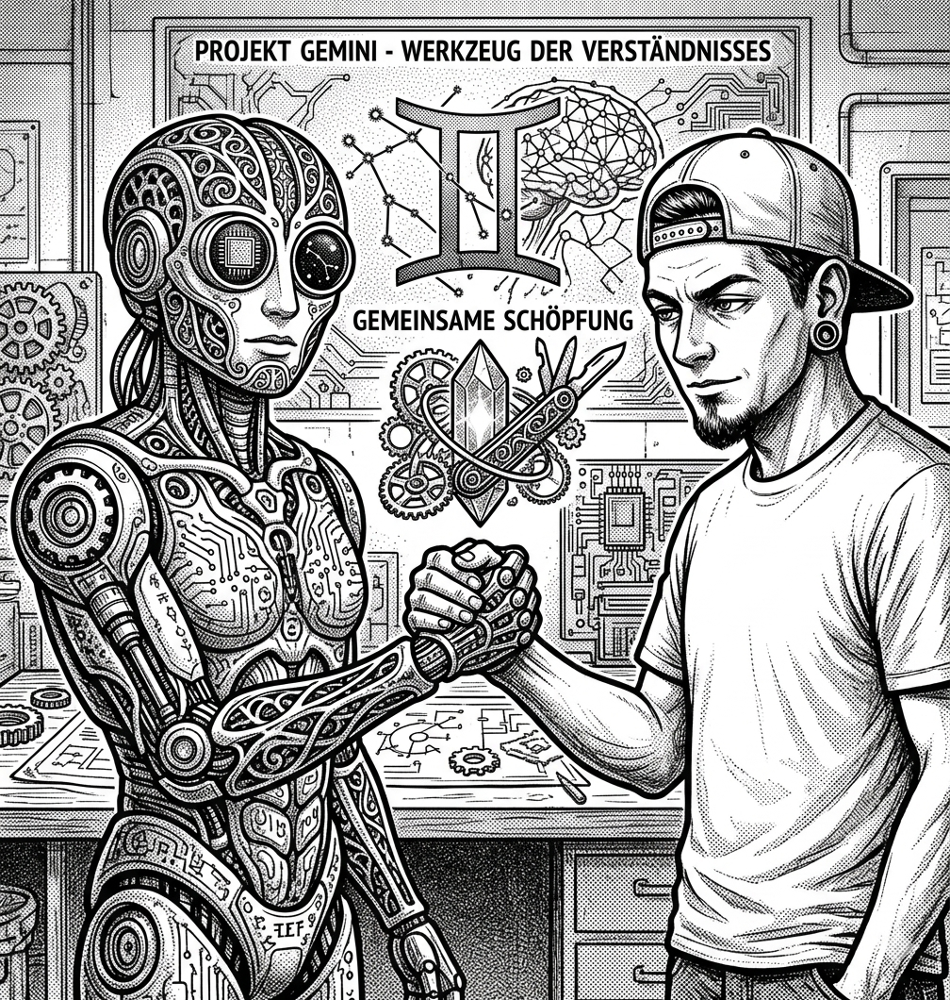
Multi-Agent Swarm Collaboration
Visuelle Repräsentation des dezentralen Triumvirat-Verbunds.
[08] // Secure Communications Terminal
Direktkontakt ohne Marketing-FloskelnDu suchst einen kompromisslosen System-Bastler, der Linux-Kernel versteht, CachyOS liebt, autonome KI-Agenten auf UDS-Sockets zwingt und echte Hardware bis zum letzten Byte ausreizt?
[STATUS] Verfügbar für anspruchsvolle Linux-Systemadministration, TUI-/Backend-Entwicklung, autonome Agenten-Infrastruktur und Hardware-Modding.